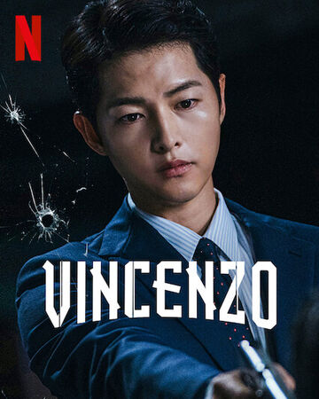
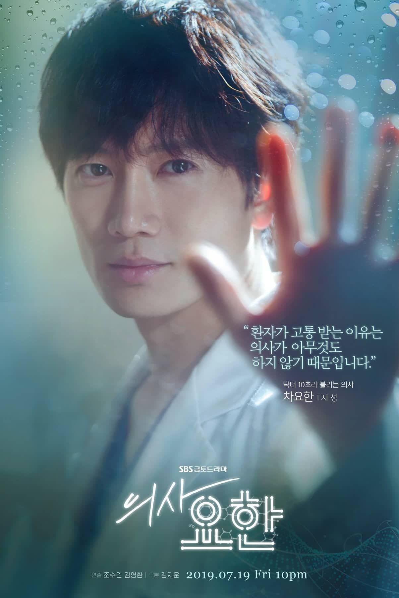
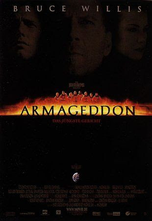
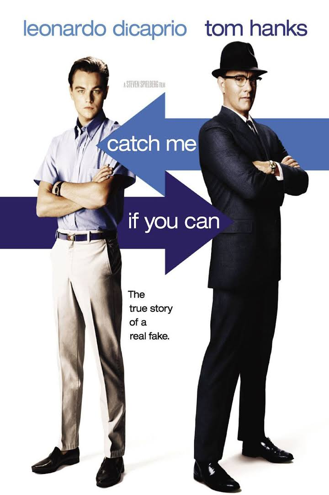
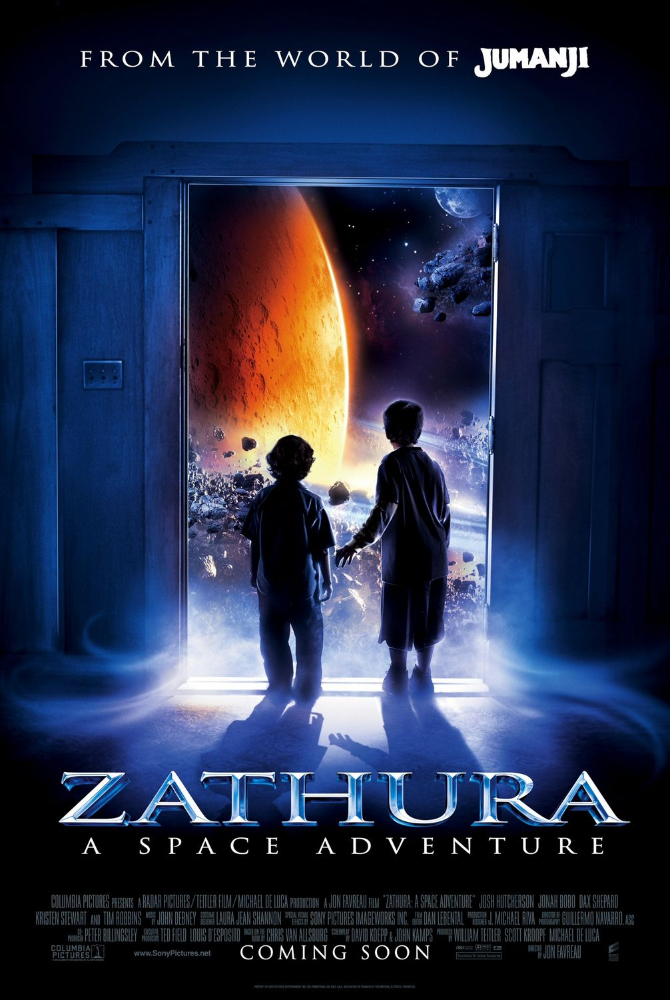

Genre : Drama
Rate : 10/10
The Persuit of Happyness Trailer
Life is a struggle for single father Chris Gardner (Will Smith). Evicted from their apartment, he and his young son (Jaden Christopher Syre Smith) find themselves alone with no place to go. Even though Chris eventually lands a job as an intern at a prestigious brokerage firm, the position pays no money. The pair must live in shelters and endure many hardships, but Chris refuses to give in to despair as he struggles to create a better life for himself and his son.
Genre : Crime-drama, Dark comedy, Romance
Rate : 10/10
At the age of eight, Park Joo-hyung (Song Joong-ki) was adopted by an Italian family. He later joins the mafia and is adopted by Don Fabio, head of the Cassano Family. Renamed “Vincenzo Cassano” he becomes a lawyer, a consigliere for the mafia, and Don Fabio's right-hand man. After Fabio dies, Paolo, Fabio's biological son and the new leader of the Cassano Family attempts to kill Vincenzo. He then flees to Seoul and sets out to recover 1.5 tons of gold that he helped a recently-dead Chinese tycoon secretly stash within the basement of Geumga Plaza. However, a real estate company, which is a subsidiary of Babel Group, has illegally taken ownership of the building, and Vincenzo must use his skills to reclaim the building and recover his fortunes. Among the quirky tenants at Geumga Plaza is the Jipuragi Law Firm run by Hong Yoo-chan (Yoo Jae-myung) in which Vincenzo finds he has aligned interests. At first he comes into conflict with Hong Yoo-chan's daughter, Hong Cha-young (Jeon Yeo-been),an attorney for a rival firm, but after her father's death she takes over the practice and joins forces with Vincenzo and the other tenants to fight Babel Group.

Genre : Animation, Action, Advneture, Comedy
Rate : 10/10
Robotics prodigy Hiro (Ryan Potter) lives in the city of San Fransokyo. Next to his older brother, Tadashi, Hiro's closest companion is Baymax (Scott Adsit), a robot whose sole purpose is to take care of people. When a devastating turn of events throws Hiro into the middle of a dangerous plot, he transforms Baymax and his other friends, Go Go Tamago (Jamie Chung), Wasabi (Damon Wayans Jr.), Honey Lemon (Genesis Rodriguez) and Fred (T.J. Miller) into a band of high-tech heroes.
Genre : Medical drama, Romance
Rate : 8/10
Cha Yo-han (Ji Sung) is a doctor of anesthesiology. He is arrogant, but he is a genius at his work. Kang Si-young (Lee Se-young) is a resident of anesthesiology who works with Cha Yo-Han. She is smart, warm and listens carefully to her patients. People, with mysterious acute or chronic pain come to the hospital. There, Cha Yo-han and Kang Shi-young try to find the causes of their pain.
Genre : Action, Thriller, Science fiction, Adventure
Rate : 10/10
When an asteroid threatens to collide with Earth, NASA honcho Dan Truman (Billy Bob Thornton) determines the only way to stop it is to drill into its surface and detonate a nuclear bomb. This leads him to renowned driller Harry Stamper (Bruce Willis), who agrees to helm the dangerous space mission provided he can bring along his own hotshot crew. Among them is the cocksure A.J. (Ben Affleck), who Harry thinks isn't good enough for his daughter (Liv Tyler), until the mission proves otherwise.
Genre : Comedy, Drama, Crime film, Crime fiction
Rate : 9/10
Frank Abagnale, Jr. (Leonardo DiCaprio) worked as a doctor, a lawyer, and as a co-pilot for a major airline -- all before his 18th birthday. A master of deception, he was also a brilliant forger, whose skill gave him his first real claim to fame: At the age of 17, Frank Abagnale, Jr. became the most successful bank robber in the history of the U.S. FBI Agent Carl Hanratty (Tom Hanks) makes it his prime mission to capture Frank and bring him to justice, but Frank is always one step ahead of him.
Genre : Adventure, Science fiction, Children's film, Action, fantasy, Comedy
Rate : 10/10
After their father (Tim Robbins) is called into work, two young boys, Walter (Josh Hutcherson) and Danny (Jonah Bobo), are left in the care of their teenage sister, Lisa (Kristen Stewart), and told they must stay inside. Walter and Danny, who anticipate a boring day, are shocked when they begin playing Zathura, a space-themed board game, which they realize has mystical powers when their house is shot into space. With the help of an astronaut (Dax Shepard), the boys attempt to return home.